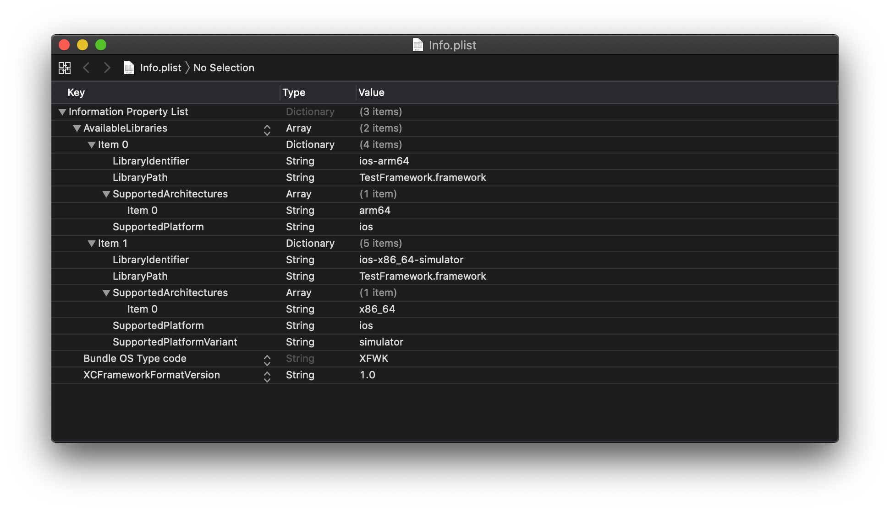
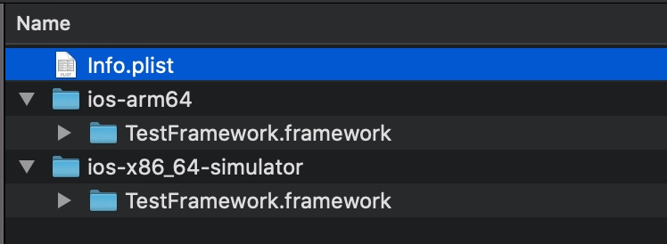

我们在前一篇文章中提到，由于真机使用的 arm64 架构的二进制与 M1 模拟器使用的 arm64 架构二进制不兼容，在 xcode 工程中引入一些较早时间构建的 framework，会导致 arm64 架构模拟器链接失败。
构建年代久远的 framework，是没有模拟器可用的 arm64 二进制的，若是三方提供的闭源 framework，甚至连使用源码重新构建的机会都没有。
基于上述原因，我们只能通过现有的 framework 想办法。 此时要解决的问题有两个，一是如何使用现有的真机 arm64 二进制，生成模拟器可用的 arm64 二进制；二是两个 arm64 二进制如何共存。
对于前一个问题，我们使用 arm64-to-sim 工具能够把为真机构建的 arm64 架构的二进制转换成模拟器可用的 arm64 二进制。对于后一个问题，苹果为我们提供的解决方案是创建 XCFramework。
XCFramework 简介
An XCFramework is a distributable binary package created by Xcode that contains variants of a framework or library so that it can be used on multiple platforms (iOS, macOS, tvOS, and watchOS), including Simulator builds. An XCFramework can be either static or dynamic and can include headers.1
XCFramework 是一种可用于分发的二进制包，它由 Xcode 创建，内部包含多个 framework 或 library，基于上述原因，XCFramework 可用于多平台场景，包括模拟器。XCFramework 可以是静态或动态库，且能够包含头文件。
XCFramework 里有什么
Framework 有其特定的结构，通常情况下包含一个 Info.plist 文件，定义了该 framework 的基本属性。XCFramework 也不例外，XCFramework 的 Info.plist 继承了 framework 的大部分属性，其中 CFBundlePackageType 的值由原来的 FMWK 变成了 XFWK。

剩下的部分是一个或多个 framework，分别存放于不同的路径下。同时路径名中描述了该 framework 对应的平台、处理器架构信息。2

如何制作 XCFramework
使用xcodebuild -create-xcframework 命令，把生成好的库（可以是 .a / framework / Swift Package，）制作成 XCFramework。命令参数如下3：
# 通过 farmework 创建
xcodebuild -create-xcframework -framework <path> [-framework <path>...] -output <path>
# 或 通过 .a 创建
xcodebuild -create-xcframework -library <path> [-headers <path>] [-library <path> [-headers <path>]...] -output <path>
转换 arm64 二进制
根据这篇文章的操作，我们可以修改已有的 arm64 二进制，使之能够运行在 arm64 架构的模拟器上面。
这里需要注意的是，重新生成的适配模拟器的 arm64 模拟器，与原有的适配真机的 arm64，无法在同一个胖二进制中共存。若使用 lipo -create 命令强行捏成一个会报错。
XCFramework 能够解决这个问题，因为它为不同的架构创建了多个对应的 framework。例如上图中的 ios-arm64 和 ios-x86_64-simulator，分别用于真机 arm64 和模拟器。其中模拟器使用的 framework 中包含了两种架构，分别是 x86_64 和 arm64。
Demo
以下脚本实现了这个功能：通过已有的包含 fat binary 的 framework，生成 xcframework。
#!/bin/bash
INPUT_FRAMEWORK_PATH=${1:-"/tmp/Protobuf/Protobuf.framework"}
NAKED_NAME=$(basename "$INPUT_FRAMEWORK_PATH" .framework)
FRAMEWORK_NAME=$(basename "$INPUT_FRAMEWORK_PATH")
IOS_FRAMEWORK_PATH="iOS/$FRAMEWORK_NAME"
SIM_FRAMEWORK_PATH="sim/$FRAMEWORK_NAME"
# Step-0: 准备胖二进制
ORIGIN_BINARY_PATH="$NAKED_NAME"
cp "$INPUT_FRAMEWORK_PATH/Versions/A/$NAKED_NAME" "$ORIGIN_BINARY_PATH"
# Step-1: 处理真机二进制
mkdir -p iOS
cp -a "$INPUT_FRAMEWORK_PATH" "$IOS_FRAMEWORK_PATH"
lipo "$ORIGIN_BINARY_PATH" \
-extract arm64 \
-output "$IOS_FRAMEWORK_PATH/Versions/A/$NAKED_NAME"
# Step-2: 处理模拟器 arm64 二进制
mkdir -p sim
cp -a "$INPUT_FRAMEWORK_PATH" "$SIM_FRAMEWORK_PATH"
# Step-2.1: 提取瘦二进制
lipo "$ORIGIN_BINARY_PATH" -thin arm64 -output "$NAKED_NAME.arm64"
lipo "$ORIGIN_BINARY_PATH" -thin x86_64 -output "$NAKED_NAME.x86_64"
mkdir -p "$NAKED_NAME-reworked"
cd "$NAKED_NAME-reworked"
# Step-2.2: 从瘦二进制提取 .o 文件
ar x "../$NAKED_NAME.arm64"
# Step-2.3: 修改 .o 文件
# see https://bogo.wtf/arm64-to-sim.html
for file in *.o; do arm64-to-sim $file; done;
# Step-2.4: 聚合 .o 生成新的瘦二进制
ar crv "../$NAKED_NAME.arm64-reworked" *.o
cd -
# Step-2.5: 生成新的胖二进制
lipo -create "$NAKED_NAME.arm64-reworked" "$NAKED_NAME.x86_64" \
-output "$SIM_FRAMEWORK_PATH/Versions/A/$NAKED_NAME"
# Step-3: 制作 XCFramework
XCFRAMEWORK_PATH="$NAKED_NAME.xcframework"
xcodebuild -create-xcframework \
-framework "$SIM_FRAMEWORK_PATH" \
-framework "$IOS_FRAMEWORK_PATH" \
-output "$XCFRAMEWORK_PATH"
# Step-4: 清理
rm "$ORIGIN_BINARY_PATH" "$NAKED_NAME.arm64-reworked" "$NAKED_NAME.arm64" "$NAKED_NAME.x86_64"
rm -rf sim
rm -rf iOS
rm -rf "$NAKED_NAME-reworked"
References
本文由 Ltryee
创作，采用 知识共享署名4.0 国际许可协议进行许可
本站文章除注明转载/出处外，均为本站原创或翻译，转载前请务必署名
最后编辑时间为: 2022-07-01T22:34:32+08:00